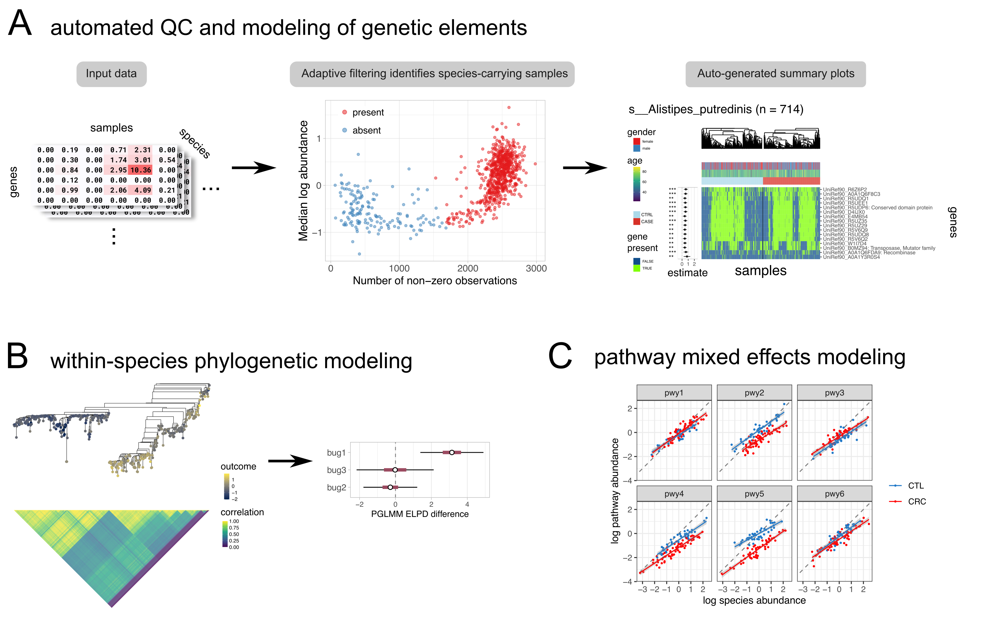

The goal of anpan is to consolidate statistical methods for strain analysis. This includes automated filtering of metagenomic functional profiles, testing genetic elements for association with outcomes, phylogenetic association testing, and pathway-level random effects models.

Dependencies
anpan depends on R ≥4.1.0 and the following R packages, most of which are available through CRAN (the exception being cmdstanr):
pkgs = c("ape",
"data.table",
"dplyr",
"fastglm",
"furrr",
"ggdendro",
"ggnewscale",
"ggplot2",
"loo",
"patchwork",
"phylogram",
"posterior",
"progressr",
"purrr",
"R.utils",
"remotes",
"stringr",
"tibble",
"tidyselect")
install.packages(pkgs, Ncpus = 4)
install.packages("cmdstanr",
repos = c("https://mc-stan.org/r-packages/", getOption("repos")))If the cmdstanr installation doesn’t work you can find more detailed instructions at this link.
Once you’ve installed cmdstanr, you will need to use it to install CmdStan itself:
library(cmdstanr)
check_cmdstan_toolchain()
install_cmdstan(cores = 2)On some servers it may also be necessary to install / load the GNU MPFR library prior to installing CmdStan.
Installation
Once you have the dependencies, you can install anpan from github with:
remotes::install_github("biobakery/anpan", build_vignettes = TRUE)Examples
The vignette has step-by-step walkthroughs and detailed documentatation on the most important functionality.
Example - element testing
You can filter large microbial gene profiles and look for associations with outcomes (while controlling for covariates) with anpan_batch():
library(anpan)
anpan_batch(bug_dir = "/path/to/functional_profiles/",
meta_file = "/path/to/metadata.tsv",
out_dir = "/path/to/output",
annotation_file = "/path/to/annotation.tsv", #optional, used for plots
filtering_method = "kmeans",
model_type = "fastglm",
covariates = c("age", "gender"),
outcome = "crc",
plot_ext = "pdf",
save_filter_stats = TRUE)This will run an anpan batch analysis for each functional profile present in bug_dir (there should be one input file per bug). This will run the adaptive filtering and functional modeling for the genes in each bug. The outputs will include the filter statistics, filter diagnostic plots, model statistics, and results plots for each bug.
Example - phylogenetic generalized linear mixed model
You can run a PGLMM with the anpan_pglmm() function. This type of model assesses the degree to which the phylogenetic structure within a species associates with the outcome. It uses integrated leave-one-out cross-validation to compare predictive performance against the “base” GLM (without phylogenetic information).
meta_file = "/path/to/metadata.tsv"
tree_file = "/path/to/file.tre"
anpan_pglmm(meta_file,
tree_file,
outcome = "response")There is a corresponding anpan_pglmm_batch() function that can be pointed to a directory of tree files with the tree_dir parameter.
Example - pathway random effects model
Using pathway and species abundance profiles, you can fit a pathway-level random effects model of the form log10(pwy_abd) ~ log10(species_abd) + (1 | pwy) + (0 + group | pwy) with anpan_pwy_ranef(). This assesses how well a binary group variable explains variation in pathway abundance.
anpan_pwy_ranef(bug_pwy_dat,
group_ind = "group01")Detailed explanation and interpretation of all three model types can be found in the vignette vignette("anpan_tutorial", package = 'anpan').
FAQ
I’m having installation issues, what’s wrong?
There’s more to the installation than the install_github() command. Please ensure that you’ve read the Dependencies section fully. The relatively unusual installation steps are:
- Installing
cmdstanrfrom the Stan website - Using
cmdstanrto install CmdStan
I have questions, where can I get help?
You can ask on the biobakery help forum: https://forum.biobakery.org/
What’s with the name?
- The name “anpan” was chosen to fit into the biobakery bread theme and because it’s short and easy to pronounce and remember.
- Real anpan are good.
- The current frontrunner backronym is “ANalysis of microbial Phylogenies And geNes” (credit to Meg Short).
- Capitalization of the name follows the xkcd rule. All lowercase “anpan” is preferred, and all uppercase “ANPAN” is acceptable in formal contexts or the start of a sentence, but mixed-case “Anpan” should be avoided.